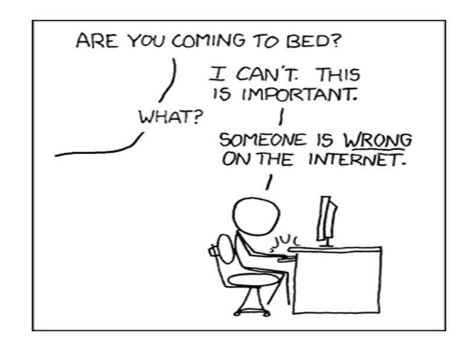
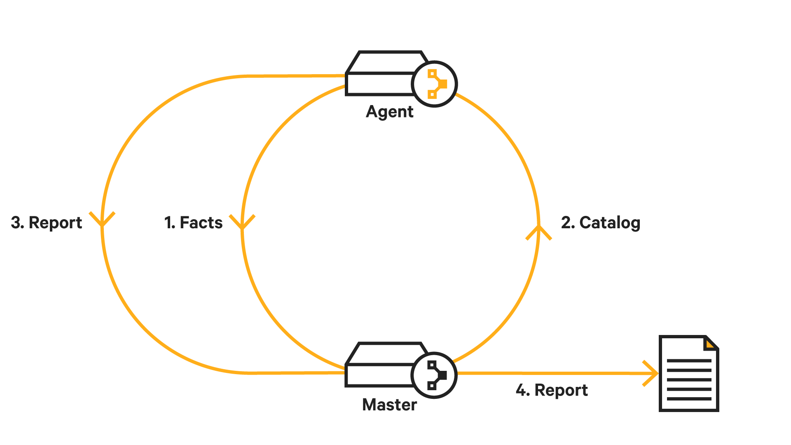
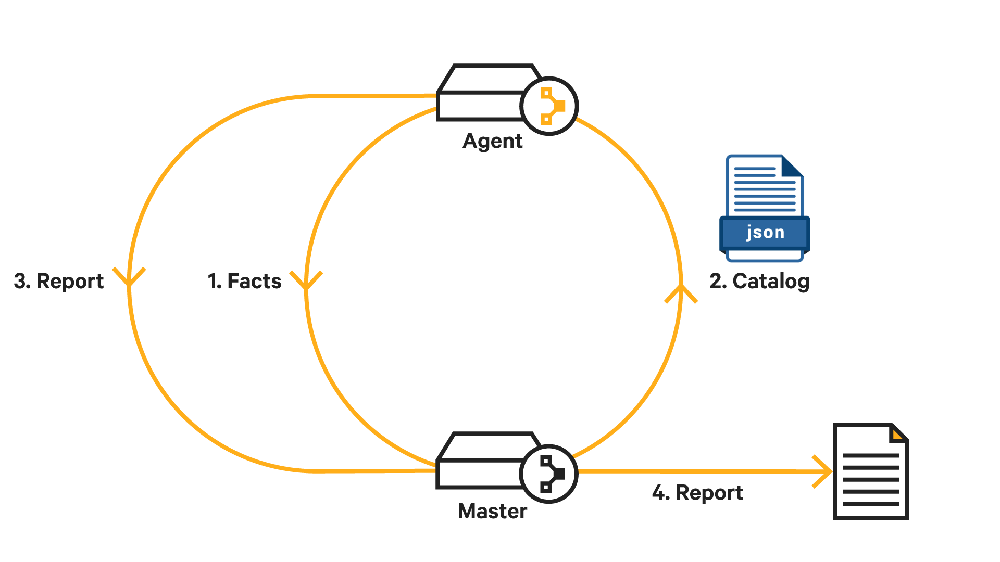
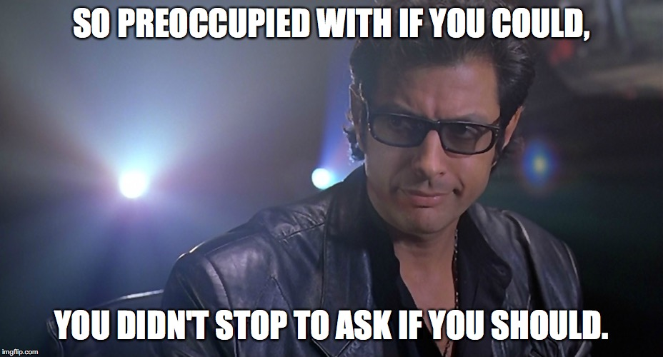
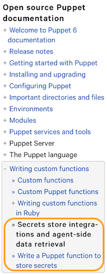

Showoff Menu
Close
Press ? for help.
All features are anonymous.
Press ? for help.
All features are anonymous.
You didn't think I was going to tell you how to write Puppet code like a fancy shell script, did you?
But with good reason. See, let's dig into a sneak peek into the innards of the Puppet Catalog.
root filesystem permissions.file { '/etc/payroll/credentials.conf':
ensure => file,
owner => 'root',
group => 'root',
mode => '0600',
content => 'some fake secret for cfgmgmtcamp',
}bolt command run "cat /etc/payroll/credentials.conf" --node agentbolt command run "jq '.resources[] | select(.type == \"File\" and .title == \"/etc/payroll/credentials.conf\").parameters' /opt/puppetlabs/puppet/cache/client_data/catalog/agent.json" --node agent


exec commands and the like{
"type": "File",
"title": "/etc/puppetlabs/mcollective/server.cfg",
[...]
"parameters": {
"content": "plugin.activemq.pool.1.password = TekjzYZubjJG3WgSOkq4...",
"owner": "root",
"group": "wheel",
"mode": "0660",
"notify": "Service[mcollective]",
"backup": false
},
"sensitive_parameters": ["content"]
},Which means that only a provider can run code to decrypt the ciphertext
A function run on the master during compilation:
Puppet::Parser::Functions::newfunction(:node_encrypt, [...]) do |args|
content = args.first
certname = self.lookupvar('clientcert')
Puppet_X::Binford2k::NodeEncrypt.encrypt(content, certname)
endAnd a provider run on the agent during enforcement:
Puppet::Type.type(:node_encrypted_file).provide(:ruby) do
desc 'Ruby provider for the node_encrypted_file type'
# ...
def content
Puppet_X::Binford2k::NodeEncrypt::Value.new(File.read(resource[:path]))
end
def content=(value)
File.write(resource[:path], resource[:content].decrypted_value)
end
enddefine node_encrypt::file (
$ensure = 'file',
$path = $title,
$backup = undef,
$checksum = undef,
$content = undef, # managed by the custom provider
$force = undef,
#...
) {
file { $title:
ensure => $ensure,
path => $path,
backup => $backup,
checksum => $checksum,
force => $force,
#...
}
node_encrypted_file { $path:
content => $content,
before => File[$title], # let the File resource do all the work
}
Node_encrypt::File<| title == $title |> {content => '<<encrypted>>'}
}node_encrypt::file { '/etc/payroll/credentials2.conf':
ensure => file,
owner => 'root',
group => 'root',
mode => '0600',
content => 'some fake secret for cfgmgmtcamp',
}bolt command run "cat /etc/payroll/credentials2.conf" --node agentbolt command run "jq '.resources[] | select(.type == \"File\" and .title == \"/etc/payroll/credentials2.conf\").parameters' /opt/puppetlabs/puppet/cache/client_data/catalog/agent.json" --node agentbolt command run "jq '.resources[] | select(.type == \"Node_encrypted_file\" and .title == \"/etc/payroll/credentials2.conf\").parameters' /opt/puppetlabs/puppet/cache/client_data/catalog/agent.json" --node agent
This would be so much more useful if I could just run a function on the agent during enforcement...
Building a template on the agent:
$variables = {
'password' => Deferred('vault_lookup::lookup',
["secret/test", 'https://vault.docker:8200']),
}
# compile the template source into the catalog
file { '/etc/secrets.conf':
ensure => file,
content => Deferred('inline_epp',
[file('mymodule/secrets.conf.epp'), $variables]),
}Any Puppet 4.x function that returns a value can be deferred except for those using scope variables or interacting with the catalog.
Deferred data typeinline_template() and file() to include template source in catalog.epp style templates can be deferred due to how ERB uses scope.There are guardrails in place to ensure that deferred functions continue to be part of a maintainable and declarative codebase.
Some implementation details that will matter:
Deferred is a data type, so it returns an Object.After all that buildup, I'm afraid this might be a little anticlimactic.
After all that buildup, I'm afraid this might be a little anticlimactic.
Puppet::Functions.create_function(:node_decrypt) do
dispatch :decrypt do
param 'String', :content
end
def decrypt(content)
Puppet::Pops::Types::PSensitiveType::Sensitive.new(
Puppet_X::Binford2k::NodeEncrypt.decrypt(content)
)
end
endfile { '/etc/payroll/credentials3.conf':
ensure => file,
owner => 'root',
group => 'root',
mode => '0600',
content => Deferred("node_decrypt",
[node_encrypt('some fake secret for cfgmgmtcamp')]
),
}bolt command run "cat /etc/payroll/credentials3.conf" --node agentbolt command run "jq '.resources[] | select(.type == \"File\" and .title == \"/etc/payroll/credentials3.conf\").parameters' /opt/puppetlabs/puppet/cache/client_data/catalog/agent.json" --node agentnode_encrypt to encrypt on the master, then defer node_decrypt to the agentfunction node_encrypt::secret(String $data) >> Deferred {
Deferred("node_decrypt", [node_encrypt($data)])
} Just tag the string:
file { '/etc/payroll/credentials4.conf':
ensure => file,
owner => 'root',
group => 'root',
mode => '0600',
content => 'some fake secret for cfgmgmtcamp'.node_encrypt::secret,
}bolt command run "cat /etc/payroll/credentials4.conf" --node agentbolt command run "jq '.resources[] | select(.type == \"File\" and .title == \"/etc/payroll/credentials4.conf\").parameters' /opt/puppetlabs/puppet/cache/client_data/catalog/agent.json" --node agent
If you cannot dispose of any given server and rebuild it trivially, then your configuration is insufficient.
mongo.example.com resolves tomaster branch of the git repoTo be sure, these often do cause problems themselves, but that's outweighed by the development velocity they enable and the internal consistency they can provide (when they're not broken),
mongodb.example.com address is actually more specific than if we put the IP address
Agent side functions should not make config changes, or have side effects, or attempt to be conditionals. They should only resolve a value at runtime that should only be known by the agent.
binford2k/node_encrypt)ploperations/consul_data)Ideally you want each node itself to be utterly irrelevant because you can trivially build a new one configured exactly as needed.

Direct links:
And this is my attempt at a markety slide! Do you like it?